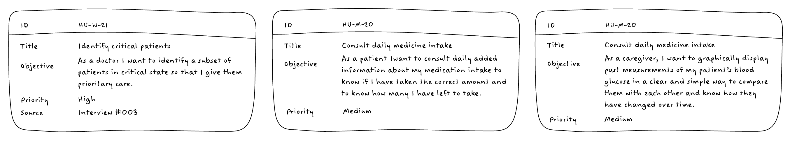
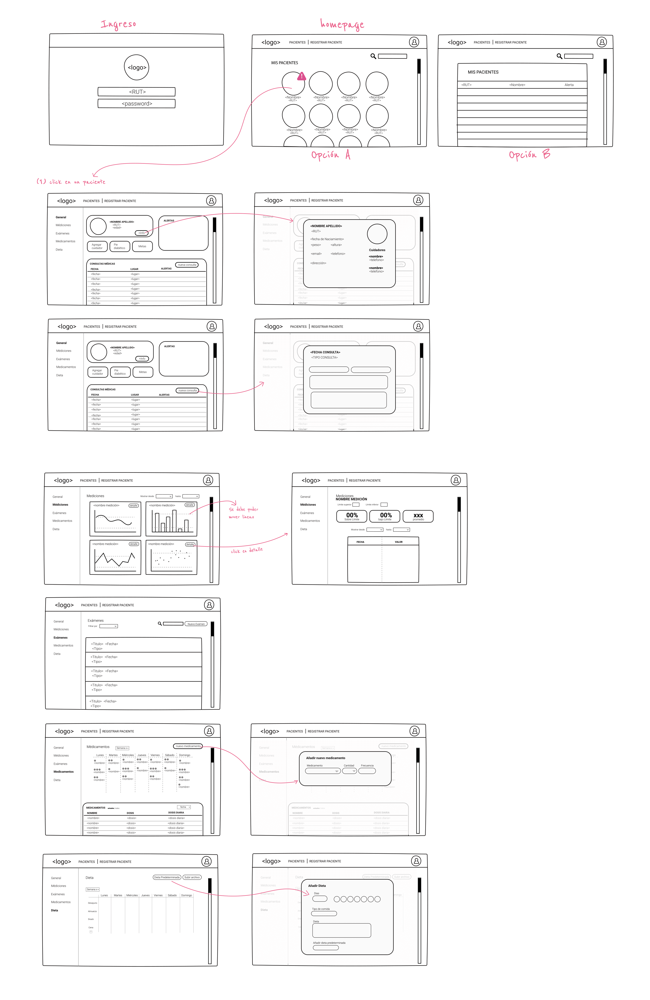
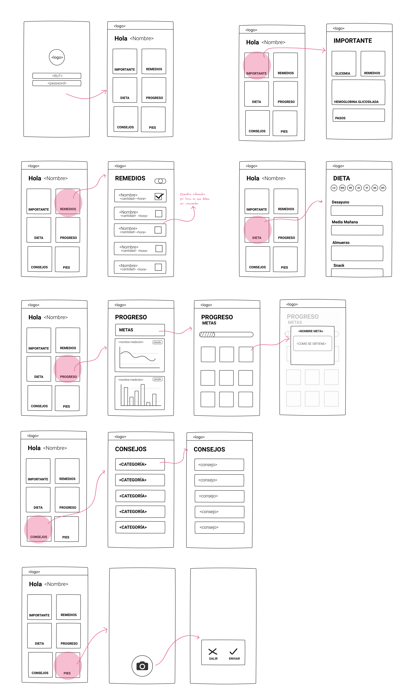

GLIK
"A platform to track diabetes"
The Problem
In Chile, it is currently estimated that more than 12% of the population suffers from diabetes, positioning the country among the nations with the highest frequency of diabetes worldwide. The disease mainly affects adults, reaching 18% in Chileans over 45 years old and 31% in those over 65. Globally, one of the problems is that half of the population with the disease are unaware of their condition. In Chile the reality is very different. Over 85% of people who have diabetes are aware of their condition. The major problem is that the affected people are not as controlled as required and about 20% of those affected have glycemic levels outside the normal range.
Within this context, the idea of the Glik was born. This project seeks to meet the need for quality care of diabetic patients in our country. Glik's goal is to develop a platform that improves the control and care of patients with diabetes mellitus (DM), bringing the patient closer to their health centers, promoting a healthy lifestyle and improving metabolic control. With this in mind, the company aims to improve the patient's quality of life and chances of survival, decreasing the complications derived from DM and the cost associated with health care. This platform focuses on patients who are beneficiaries of the public health system in Chile, but also seeks to incorporate patients who are cared for in the private sector.
The Project
Glik is a web and mobile application to track the development of diabetes in patients. The project was created by doctors of Pontificia Universidad Católica to be used in Red UC Christus.
For designing the project I had to study both the behavior of doctors, patients (mostly seniors) and caregivers to make a platform that would cover the needs of all types of users. The two main parts of the project are described below:
a. Web platform: Used by teams of healthcare workers. Its objective is to report the patient's conditions, enter and consult the results of medical exams, oversee physical activity, manage medications, visualize fundamental information about the disease, and help monitor the patient's progress. It should also work as a platform for managing doctors and medical centers related to patients with diabetes by one or more administrators.
b. Mobile App : The mobile application is aimed at patients and caregivers. The application's objective is to help monitor patients, provide them with important and necessary information, motivate them to follow healthier lifestyles that help control the disease, and collect data that will be used to analyze individual health conditions. In order to achieve this, the platform must be integrated with a glucometer attached to the patient's skin for it to record blood glucose levels continuously and in real time. Both parts of the system work together in order to generate a monitoring, care and communication platform for type II diabetes. Patients, caregivers and healthcare professionals are included in a cycle of data entry, alerts, recommendations and continuous monitoring to reduce the risks associated with the disease.
Scope
The project lasted four months, in an adverse context of a pandemic (COVID-19), so defining the scope and prioritizing features was essential. It was agreed to reach an MVP (Minimum Viable Product) by the end of the semester containing the necessary features for it to work. The product included a web interface programmed in React that allowed for the monitoring of the patients and the administration of the platform, both in a general level and for a single medical center. Also, we created an Android application programmed in Kotlin that supplied medical and control information to the patients and fed data to the medical team.
I was in charge of the design, UX/UI requirement definition, and testing of both platforms. I will describe the different tasks and iterations done on this part of the project.
Interviews
To start the project it was necesary to interview doctors, caretakers and seniors. This were done in the COVID-19 context, so mostly all interviews where done remotly. For this we made different exploratory interview protocols. Each had the objective of the meetings, the questions (mostly open ended since this was the first exploratory phase) and guidelines on how to carry the different conversations.
From the conversations we where able to get a better understanding of diabetes, patient complications, caretakers job and doctors’ workflows. This allowed us to get some general conclusions regarding each one of these roles:
a) Doctors: doctors have many patients with different needs. They need to control their patients’ body mass index, the amount of glucose in their blood, and the state of their hands and feet. The medical team is a group of very busy professionals, having to attend many patients in a short period of time. Hence, any solution would have an aggregate value only if it managed to reduce this load (by, for instance, minimizing the number of face-to-face encounters with the patients)
b) Caretakers: In Chile (the country where the project was developed) most caretakers are family members, and some hired nurses. Family members don't have the expertise nurses do about the illness and don't handle technical language. The caregivers are passive participants (they don't generate any data), but they must be completely informed of the progress of the patient they are looking after.
c) Patients: The patients are subjected to a significant amount of burden of treatment. Therefore, the adoption of a disease monitoring app would be successful only if it doesn't increase this burden and if it's use easily adapts to their previous lifestyle. Also, most of the critical patients are seniors, so the solution needed to fit their way of interacting with technology.
With the information gathered in the interviews, we created different user stories to fit the user requirements. In total we wrote more than a hundred user stories per user, and identified user requirements as well as security, confidentiality and technical necessities.
After the user stories were identified, I created web and mobile mockups to test different workflows. These can be seen in the images below.
 Web & Mobile design
For the web application I followed a color scheme used in many medical centers. The design also studied the tools used currently by doctors to follow similar paths and functionalities.